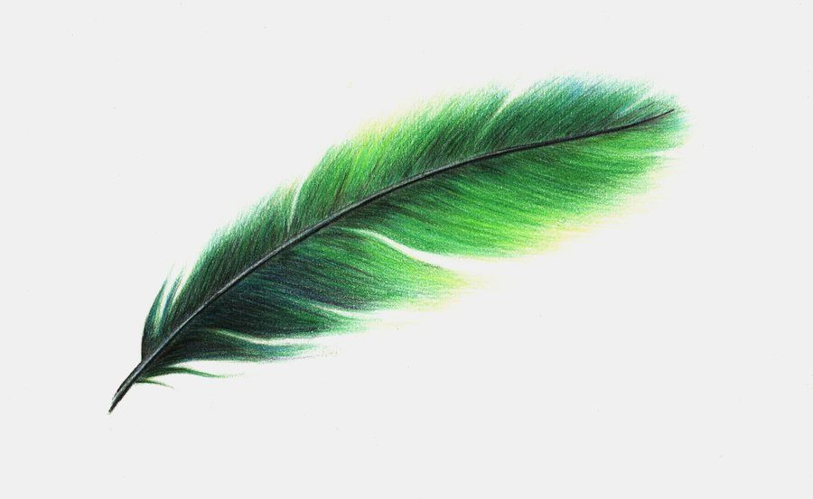
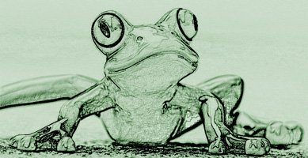
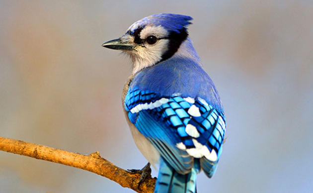

[1]
The Vietnamese German University
Foundation Year
English for Computer Science
Emily Elizabeth Dickinson (December 10th, 1830 – May 15th, 1886) was an American poet.
Dickinson was born in Amherst, Massachusetts.
Although part of a prominent family with strong ties to its community, Dickinson lived much of her life in reclusive isolation.
After studying at the Amherst Academy for seven years in her youth, she briefly attended the Mount Holyoke Female Seminary before returning to her family's house in Amherst.
Considered an eccentric by locals, she developed a noted penchant for white clothing and became known for her reluctance to greet guests or, later in life, to even leave her bedroom.
Dickinson never married, and most friendships between her and others depended entirely upon correspondence.
Dickinson was a recluse for the later years of her life.
While Dickinson was a prolific private poet, fewer than a dozen of her nearly 1,800 poems were published during her lifetime.
The work that was published during her lifetime was usually altered significantly by the publishers to fit the conventional poetic rules of the time.
Dickinson's poems are unique for the era in which she wrote; they contain short lines, typically lack titles, and often use slant rhyme as well as unconventional capitalization and punctuation.
Many of her poems deal with themes of death and immortality, two recurring topics in letters to her friends.
Although Dickinson's acquaintances were most likely aware of her writing, it was not until after her death in 1886—when Lavinia, Dickinson's younger sister, discovered her cache of poems—that the breadth of her work became apparent to the public.
Her first collection of poetry was published in 1890 by personal acquaintances Thomas Wentworth Higginson and Mabel Loomis Todd, though both heavily edited the content.
A complete, and mostly unaltered, collection of her poetry became available for the first time when scholar Thomas H. Johnson published The Poems of Emily Dickinson in 1955.
Despite some unfavorable reception and skepticism over the late 19th and early 20th centuries regarding her literary prowess, Dickinson is now almost universally considered to be one of the most significant of all American poets. [2]
List of Emily Dickinson's poems:
Return to home page“Hope” is the thing with feathers -
That perches in the soul -
And sings the tune without the words -
And never stops - at all -
And sweetest - in the Gale - is heard -
And sore must be the storm -
That could abash the little Bird
That kept so many warm -
I’ve heard it in the chillest land -
And on the strangest Sea -
Yet - never - in Extremity,
It asked a crumb - of me.
By Emily Dickinson [3]

[4]
Return to top
Return to home page
I’m nobody! Who are you?
Are you nobody, too?
Then there’s a pair of us – don’t tell!
They’d advertise – you know!
How dreary to be somebody!
How public like a frog
To tell one’s name the livelong day
To an admiring bog!
By Emily Dickinson [5]

[6]
Return to top
Return to home page
God gave a loaf to every bird,
But just a crumb to me;
I dare not eat it, though I starve,–
My poignant luxury
To own it, touch it, prove the feat
That made the pellet mine,–
Too happy in my sparrow chance
For ampler coveting.
It might be famine all around,
I could not miss an ear,
Such plenty smiles upon my board,
My garner shows so fair.
I wonder how the rich may feel,–
An Indiaman–an Earl?
I deem that I with but a crumb
Am sovereign of them all.
By Emily Dickinson [7]

[8]
Return to top
Return to home page
References
[1] Photogragh of Emily Dickinson (1847). Retrieved 4th December 2016 from www.wikipedia.org
[2] Biography of Emily Dickinson. Retrived 4th December 2016 from www.wikipedia.org
[3] Hope is the Thing with Feathers. Retrived 4th December 2016 from www.poetryfoundation.org
[4] Feather Image. Retrived 4th December 2016 from www.pinterest.com
[5] I’m nobody! Who are you?. Retrived 4th December 2016 from www.shortpoems.org
[6] Frog Image. Retrived 4th December 2016 from http://www.shadowofiris.com/
[7] God Gave A Loaf To Every Bird. Retrived 4th December 2016 from www.shortpoems.org
[8] Bird Image. Retrived 4th December 2016 from http://www.audubon.org/